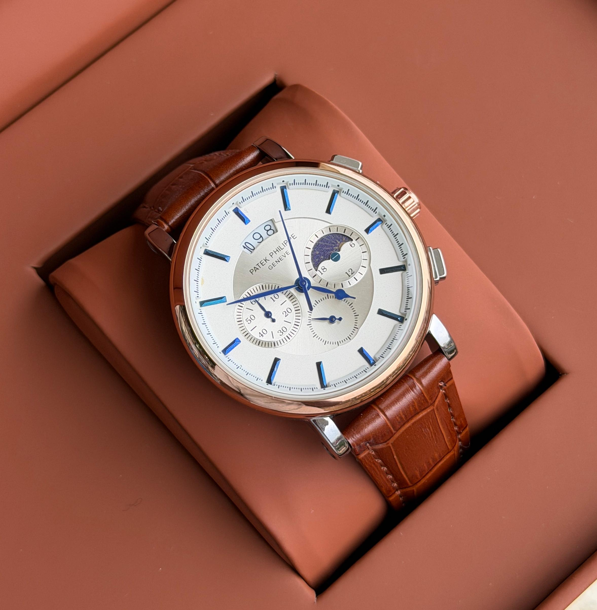
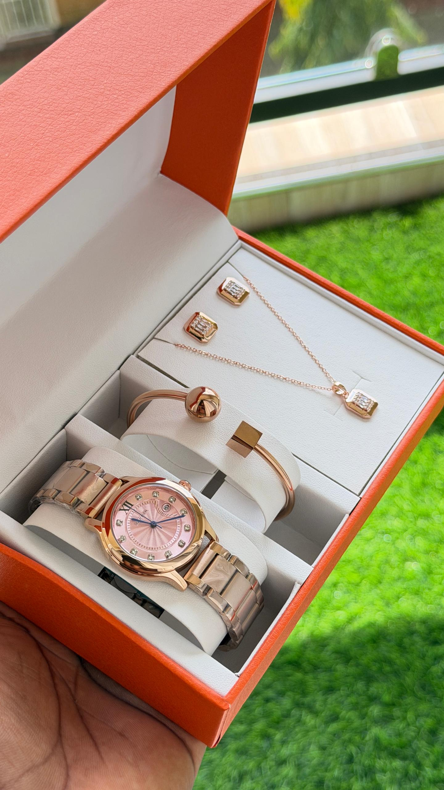
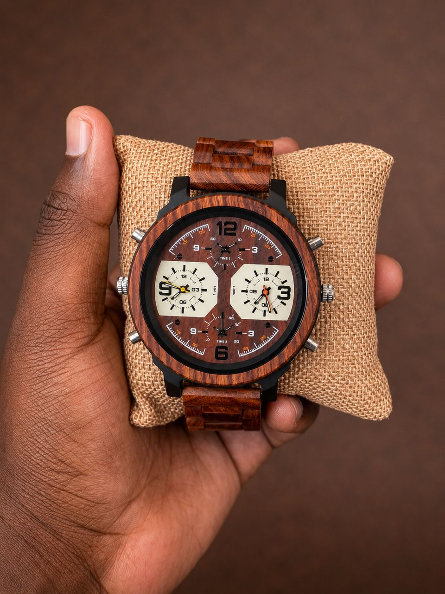
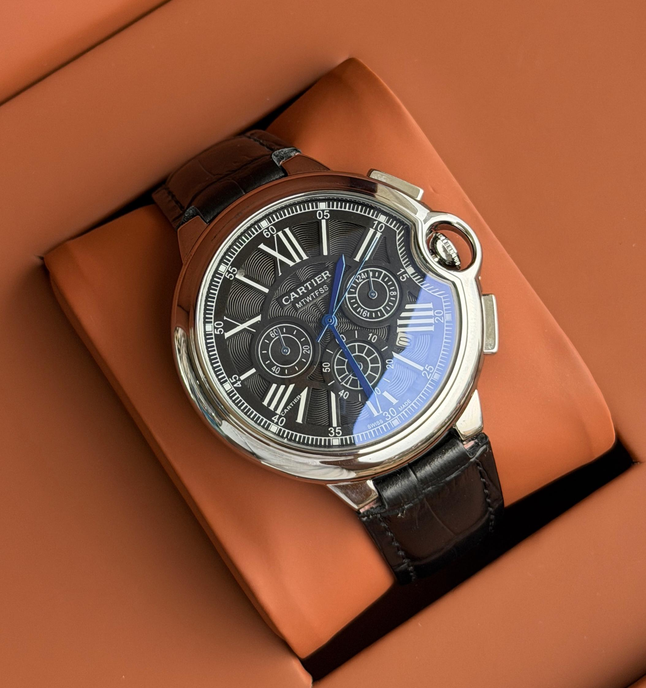

01
Refined · confident
Watches selected in Kampala · Est. 2026
Watches with presence, character and purpose—chosen to feel personal from the first glance.
Explore ↓The collection
Our selection changes with each arrival. These are the worlds you can explore when you visit Wrist Mode.
Selected pieces
The Wrist Mode lineup
A closer look at the distinct personalities you can discover in store—from quiet refinement to unmistakable character.
Classic · Refined
A warm, composed piece for the person who prefers timeless details over passing trends.

02Polished · Expressive
Soft warmth and polished detail create an elegant presence that moves easily from day to evening.

03Natural · Distinctive
Visible grain and an unconventional finish make every glance feel personal, tactile and individual.
Find your perspective
Selected details

The best piece is the one that looks at home on your wrist from day one.
The store experience
We help you move beyond the display case—comparing proportions, finishes and feeling until the right choice becomes clear.
Tell us what you wear, where you are going and what matters to you.
See how different cases, dials and straps sit and feel on your wrist.
Leave with practical care guidance and a watch that feels unmistakably yours.
Our story
Kampala · Uganda
Wrist Mode began with a simple idea: the watch on your wrist should say something true about you. Not loudly, but clearly.
Whether you are choosing your first serious watch, finding a thoughtful gift or marking a new chapter, we make the process personal and considered.
“Your time is personal.
Your watch should be too.”
Visit Wrist Mode
See the watches in person, try on different styles and take your time choosing.
Kampala, Uganda
Full showroom address to be confirmedMonday—Saturday
9:00 AM—6:00 PMPhone & WhatsApp
Contact details to be added